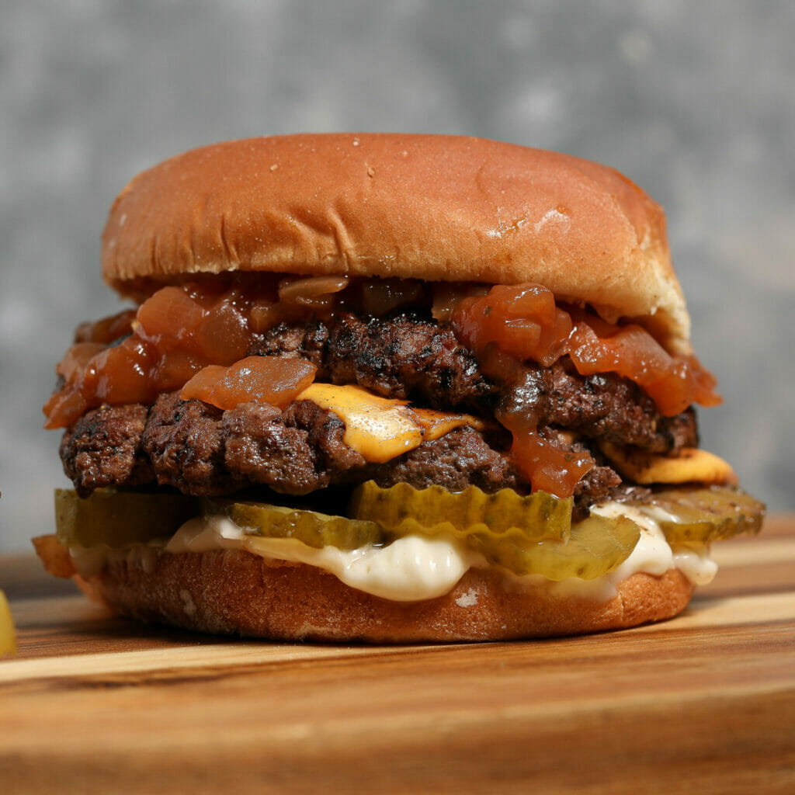

Smashburgers

Description
Go ahead and roll up your sleeves when you sink your teeth into the crispy crust and juicy meat of the Ultimate Smashburger Recipe.
Piled high with a hug of molten cheese and sweet onions, this is a classic you’ll be grilling up all summer long.
Ingredients
- 1 lbs ground beef
- 1/2 tsp kosher salt
- 1/8 tsp black pepper
- 2 tsp vegetable oil
- 4 slices of cheese
- mayonnaise
- pickles
- burger buns
- onion spread or caramelized onions
Steps
- Cut 4 5" pieces of wax paper.
- Preheat your grill to 400 degrees. Place a cast iron skillet on direct heat or a griddle and allow it to heat up.
- Divide your meat into 4 and them form 4 balls of meat.
- Mix together your salt and pepper.
- Add the oil to the hot cast iron and allow it to heat.
- Place a ball of meat on the hot skillet and then place a piece of wax paper over the top. Use your spatula or burger press to flatten it out evenly.
- Sprinkle a little salt and pepper over the top.
- Proceed with the remaining balls of meat, careful not to crowd the pan. You can work in batches if needed.
- Let the first side cook for 2 minutes or until it's sizzling and brown.
- Flip your burgers and top with cheese.
- Let the second side cook until brown, about 2 minutes.
- To assemble your burgers spread mayo over the bottom bun. Top with pickles. Add 1-2 burger patties on top and then spread the caramelized onions over it.
Top with the top bun and enjoy!